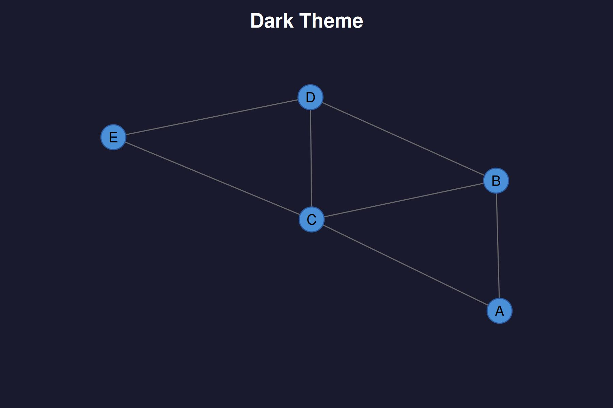
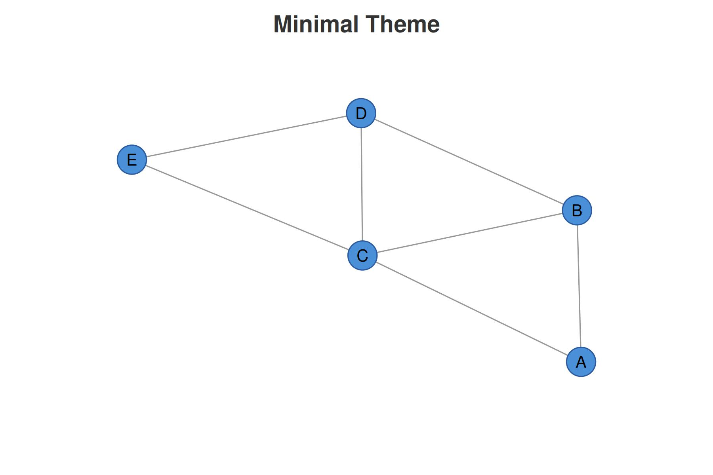

This script demonstrates the basic usage of the cograph
package.
Example 1: Simple Network from Adjacency Matrix
Create a simple adjacency matrix
adj <- matrix(c(
0, 1, 1, 0, 0,
1, 0, 1, 1, 0,
1, 1, 0, 1, 1,
0, 1, 1, 0, 1,
0, 0, 1, 1, 0
), nrow = 5, byrow = TRUE)
# Add node labels
rownames(adj) <- colnames(adj) <- c("A", "B", "C", "D", "E")
# Basic visualization
cograph(adj)
#> Cograph Network
#> ==============
#> Nodes: 5
#> Edges: 7
#> Directed: FALSE
#> Weighted: FALSE
#> Layout: computed
#> Theme: classic
#>
#> Use plot() or sn_render() to visualize
#> Use sn_ggplot() to convert to ggplot2Example 2: Customized Network
adj |>
cograph(layout = "circle") |>
sn_nodes(
size = 0.08,
fill = "steelblue",
border_color = "navy",
border_width = 2
) |>
sn_edges(
width = 1.5,
color = "gray50"
) |>
sn_render(title = "My Network")
Example 3: Weighted Network with Positive/Negative Edges
weighted_adj <- matrix(c(
0, 0.8, -0.5, 0, 0,
0.8, 0, 0.3, -0.7, 0,
-0.5, 0.3, 0, 0.6, -0.4,
0, -0.7, 0.6, 0, 0.9,
0, 0, -0.4, 0.9, 0
), nrow = 5, byrow = TRUE)
weighted_adj |>
cograph(layout = "spring", seed = 42) |>
sn_edges(
width = "weight",
color = "weight",
positive_color = "#2E7D32",
negative_color = "#C62828"
) |>
sn_nodes(size = 0.06, fill = "gray90") |>
sn_render(title = "Weighted Network")
#> Warning: 'positive_color' is deprecated, use 'edge_positive_color' instead.
#> Warning: 'negative_color' is deprecated, use 'edge_negative_color' instead.
Example 4: Group-Based Layout
# Create a larger network
n <- 12
group_adj <- matrix(0, n, n)
# Create connections within groups
for (g in list(1:4, 5:8, 9:12)) {
for (i in g) {
for (j in g) {
if (i < j && runif(1) > 0.3) {
group_adj[i, j] <- group_adj[j, i] <- 1
}
}
}
}Add some connections between groups
group_adj[4, 5] <- group_adj[5, 4] <- 1
group_adj[8, 9] <- group_adj[9, 8] <- 1
groups <- rep(c("Group A", "Group B", "Group C"), each = 4)
group_adj |>
cograph() |>
sn_layout("groups", groups = groups) |>
sn_nodes(
fill = c(rep("#E69F00", 4), rep("#56B4E9", 4), rep("#009E73", 4)),
size = 0.05
) |>
sn_theme("minimal") |>
sn_render(title = "Grouped Network")
Example 5: Different Themes



# Colorblind-friendly theme
cograph(adj) |> sn_theme("colorblind") |> sn_render(title = "Colorblind Theme")
Example 6: Different Node Shapes
shapes <- c("circle", "square", "triangle", "diamond", "star")
adj |>
cograph(layout = "circle") |>
sn_nodes(
shape = shapes,
size = 0.08,
fill = palette_colorblind(5)
) |>
sn_render(title = "Different Node Shapes")
Example 7: Convert to ggplot2
library(ggplot2)
#>
#> Attaching package: 'ggplot2'
#> The following object is masked from 'package:cograph':
#>
#> get_theme
p <- adj |>
cograph() |>
sn_nodes(fill = "coral", size = 0.07) |>
sn_ggplot()
# Add ggplot2 customizations
p +
labs(
title = "Network Plot",
subtitle = "Created with cograph, customized with ggplot2"
) +
theme(
plot.title = element_text(hjust = 0.5, size = 16, face = "bold"),
plot.subtitle = element_text(hjust = 0.5, color = "gray50")
)
Example 8: Directed Network
dir_adj <- matrix(c(
0, 1, 1, 0, 0,
0, 0, 1, 1, 0,
0, 0, 0, 1, 1,
0, 0, 0, 0, 1,
0, 0, 0, 0, 0
), nrow = 5, byrow = TRUE)
dir_adj |>
cograph(directed = TRUE, layout = "circle") |>
sn_edges(
curvature = 0.15,
arrow_size = 0.02
) |>
sn_nodes(fill = "lightblue") |>
sn_render(title = "Directed Network")
Example 9: Edge List Input
edges <- data.frame(
from = c("Alice", "Alice", "Bob", "Bob", "Carol"),
to = c("Bob", "Carol", "Carol", "Dave", "Dave"),
weight = c(1, 2, 1.5, 3, 0.5)
)
edges |>
cograph(layout = "spring", seed = 123) |>
sn_edges(width = "weight") |>
sn_nodes(size = 0.06, fill = "mediumpurple") |>
sn_render(title = "Network from Edge List")
Example 10: Save to File
# Uncomment to save:
# net <- cograph(adj) |>
# sn_nodes(fill = "steelblue") |>
# sn_theme("minimal")
#
# sn_save(net, "network.pdf", width = 8, height = 8)
# sn_save(net, "network.png", width = 8, height = 8, dpi = 300)
# sn_save(net, "network.svg", width = 8, height = 8)
cat("\ncograph examples completed successfully!\n")
#>
#> cograph examples completed successfully!